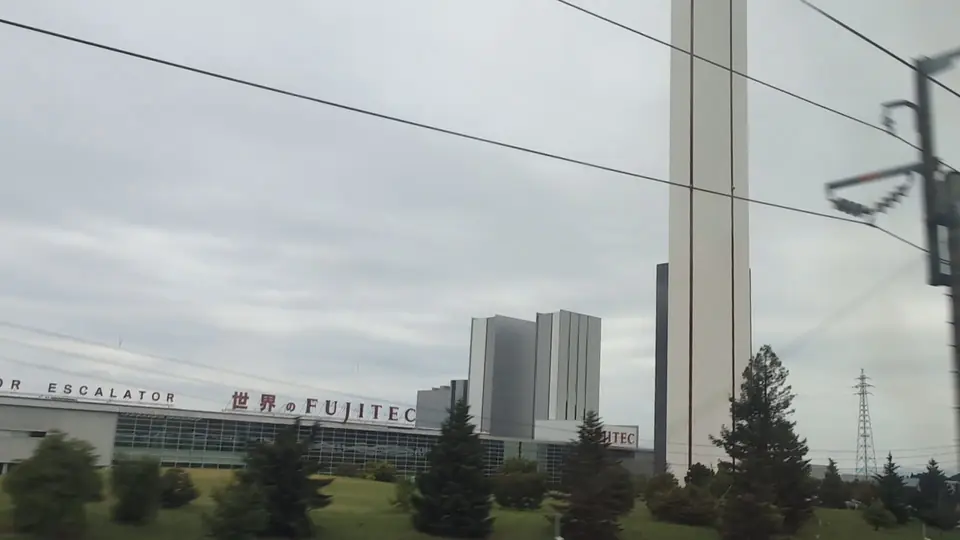

- Section
- Near Maibara
- Seat side
- Seat E · mountain side
- Timing
- About 113 minutes after leaving Tokyo on a Nozomi train
- Photos
- 1 photos
What is the tall tower?
The tower on the Seat E side near Maibara belongs to the elevator research facility at Fujitec's Big Wing. Big Wing opened in 2006 as an integrated headquarters, R&D and manufacturing base spread over roughly 150,000 square metres. Its 170-metre research tower consists of high-rise and mid-rise towers used for elevator testing.
More: Open the Big Wing profileRead the research tower announcementFUJITEC: History
If you are traveling from Tokyo toward Shin-Osaka, start watching the Seat E · mountain side window as you approach Near Maibara. If you are traveling toward Tokyo, the order is reversed.
What is tested there?
FUJITEC's official information says the research tower contains 13 elevators and tests high-speed models in the roughly 1,000 m/min class. The height serves a practical purpose: it provides a full-scale test environment for safely evaluating elevator movement.
Big Wing combines headquarters, research and development, and manufacturing on one site. From the train, use the tall tower together with the lower buildings around it as a visual group rather than searching for an isolated skyscraper.
When the tower opened in 2006, it was described as world-leading or world-largest-class for elevator research. This page does not make a present-day ranking claim; the useful clue is the full-scale test facility beside the route.
Location at a glance
Open mapSwitch between the spot and the Shinkansen viewpoint.
How to catch FUJITEC Big Wing
1. Choose the window first
As you approach Near Maibara, start watching from Seat E · mountain side. Use Live Guide while riding, or the map on this page before you board.
The clearest view lasts only a few seconds. Decide the seat side and window direction before it arrives rather than reaching for your camera late.
2. Highlights
On Nozomi 1, departing Tokyo at 06:00, this photo was taken at about 07:52 — roughly 113 minutes from Tokyo. After Gifu-Hashima, watch Seat E for the slender tower rising above the lower Big Wing buildings.
 Related
Sawayama Castle Ruins
Related
Sawayama Castle Ruins
 Related
Mt. Kinsho
Related
Mt. Kinsho
 Related
Kannonji Castle Ruins
Related
Kannonji Castle Ruins